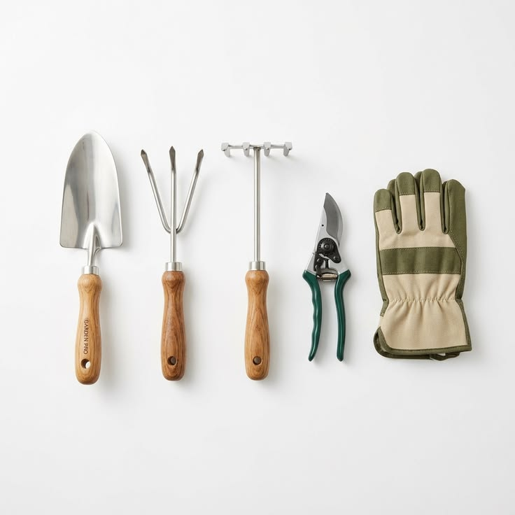

ניקוי, חיטוי, השחזה ואחסון. ארבעה שלבים שמכפילים את אורך החיים של כל כלי

כלי גינון טובים הם השקעה. מספריים מקצועיים, אתי פלדה, גרזן איכותי - כלים כאלה עולים כסף, אבל אם מטפלים בהם נכון הם מחזיקים עשרות שנים. הבעיה היא שרוב האנשים משקיעים בבחירת הכלים ולא בתחזוקתם. הם נשארים בבוץ אחרי שימוש, מאוחסנים רטובים בחוץ, ואחרי עונה או שתיים - מוחלפים.
ארבעה שלבים מספיקים כדי שזה לא יקרה: ניקוי, חיטוי, השחזה, אחסון. הפרדנו כל אחד בנפרד.
עפר שנשאר על כלי מתכת מחזיק לחות. לחות על מתכת = חלודה. בשטח הגינה הישראלית, שיש בה תנאים של קיץ לח וחורף גשום, הנזק מצטבר מהר. הפתרון פשוט: שטיפה בסוף כל שימוש.
לכלוך יבש יוצא בלחץ מים בסיסי. צינור עם זרבובית קפיצית מספיק לרוב הכלים. לכלוך שנדבק (חרסית, שרף, גזם ירוק) מצריך מברשת חוט קשיחה ולפעמים ממס קל. שרף ספציפי שיש בגיזום עצי פרי ניתן להסרה עם נפט לבן או שמן מינרלי, לא מים. אחרי הניקוי: ייבוש מלא לפני אחסון. מגבת, ואז כמה דקות באוויר.
חלודה קיימת, מה עושים? שפשוף עם נייר שמיר (גרנולציה 80–120) בתנועות לאורך הלהב מוציא חלודה שטחית. חלודה עמוקה שחדרה לחומר, הכלי נפגע לצמיתות. עדיף לטפל בחלודה מוקדם ולא לחכות שתתקדם.
זה הנושא שהכי פחות מדברים עליו ושהכי חשוב בגינה פרטית. כלי גיזום שעבד על צמח חולה, פטרייה, חיידק, נגיף, נושא את הפתוגן על הלהב. הפעם הבאה שמשתמשים בו, הוא עובר לצמח הבריא. כך מתפשטת מחלה בין צמחים שיושבים במרחק של שני מטר זה מזה.
אוניברסיטת פלורידה ו-UMN Extension מציינות שתי שיטות מוכחות:
בגינות שאנחנו מקימים, ובמיוחד בגינות עם ריכוז צמחים גבוה כמו פנטהאוזים ומרפסות. החיטוי הוא נוהל שאנחנו ממליצים תמיד. הנזק ממחלה שעוברת בין עציצים הוא הרבה יותר יקר מאלכוהול בספריי.
מספריים קהים לא חותכים, הן קורעות. קריעה של ענף יוצרת פצע גדול ומשוסע שמתרפא לאט ופתוח יותר לפגיעות. כלי חד חותך בנקודה אחת, מסייע לצמח לרפא את הפצע מהר.
השחזת כלי גיזום ביתי מתבצע עם אבן כרביד (diamond sharpening stone) קטנה. עוקבים אחרי הזווית המקורית של היצרן (בדרך כלל 20–25 מעלות), משחיזים בצד הסלסולה בלבד בתנועות חד-כיווניות. בודקים עם אצבע (זהירות) שהלהב שב לחדות.
כמה פעמים? לפי השימוש. כלי גיזום שעובד שבועי, פעם בחודש עד חודשיים. אתים ומגרפות, אחת לחצי שנה. אנחנו ממליצים לבדוק חדות לפני תחילת כל עונה כנוהל קבוע.
שמן על המתכת יוצר שכבת הגנה שמונעת חמצון. שמן פשתן מבושל (linseed oil) הוא הקלאסי לכלי גינון. מתאים גם לחלק המתכתי וגם לידיות עץ. שמן מינרלי זול יותר ועובד היטב על מתכת. שמן מנוע ישן: פתרון עממי שעובד, אם כי לא הידידותי ביותר לסביבה.
טריק פרקטי שנפוץ בגינות קדם-תשתית: דלי חול עם מעט שמן ליד הכניסה לאחסון. תוקעים את הכלים בחול לכמה שניות. הפעולה מנקה שאריות עפר ומשמנת בו-זמנית. פשוט יותר מכל שגרת תחזוקה.
לגבי אחסון: כלים תלויים (ניצבים, לא שוכבים) מתכנסים פחות לחות. מחסן עם אוורור עדיף על כנסייה סגורה. ידיות עץ שמאוחסנות בלחות מתעקלות ומסדקות. שמן פשתן על הידית פעמיים בשנה פותר את זה.
אין צורך בשגרת תחזוקה מורכבת. כמה דקות בסוף כל שימוש מספיקות: שטיפה, ייבוש, ניגוב אלכוהול אחרי גיזום, שמן פעמיים בעונה. השחזה, אחת לחודש-חודשיים לכלים שבשימוש אינטנסיבי.
כלים מקצועיים שמטופלים כך מחזיקים 20, 30 שנה ויותר. כלים שלא מטופלים. שנה-שנתיים וכבר לא עובדים כמו שצריך. ההבדל ביניהם הוא עשר דקות בשבוע.
אנחנו מקימים ומלווים גינות. כולל ייעוץ לתחזוקה שוטפת שמתאימה לסוג הגינה שלכם